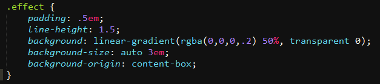
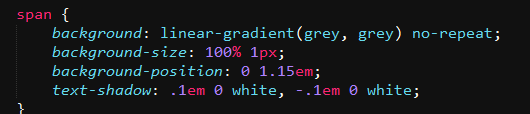
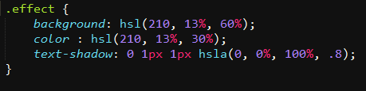

| 字体排印 | |
|
第一个例子：文本换行 在CSS中 "\A"是表示换行符的，但是光有换行符还是不够，因为html默认会合并空白符， 所以需要禁止空白符的合并。 dd + dt::before { content: '\A'; white-space: pre; } |
|
while(true) {
var d = new Date(); if(d.getDate()==1 && d.getMonth()==3) { alert('heheda'); } } |
第二个例子：文本行的斑马纹效果，用渐变实现  |
|
"The only way to get rid of temptation is to yield to it."
|
第三个例子，自定义下划线，也是用渐变实现，实现一个1px高的背景渐变图，然后定位在字体下方，
为了防止字体穿透下划线，可以用文本阴影来抵消效果  chrome下好像显示有问题，渐变图定位的太过靠下消失了。 |
| 现实中的文字效果 | |
|
"The only way to get rid of temptation is to yield to it."
|
凸版印刷效果：当我们在浅色背景上使用深色文字时，在底部加上浅色投影效果最佳。  |
|
CSS
|
空心字效果，理论上应该用文本阴影的扩张半径来实现，但是这个参数浏览器的支持程度不佳， 所以可以用多重阴影的效果来实现，
不过这种方式在描边的宽度比较大时，显示效果也不佳，最理想的方案是SVG，这里只列举多重阴影的效果。 text-shadow:2px 0 #000, -2px 0 #000, 0 2px #000, 0 -2px #000; |